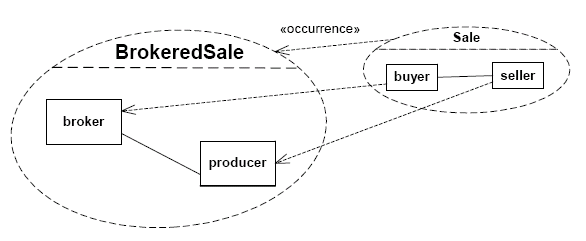

Software Engineering
Composite Structure
DiagramsAgenda
- Definitions
- Composite Structure Diagrams
- Collaborations
- Structured Classes
- Composite Structure of Components
Definitions
- A component represents a modular part of a system that
encapsulates its contents and whose manifestation is replaceable within its
environment.
- The term “structure” refers to a composition of interconnected
elements, representing run-time instances collaborating over communications
links to achieve some common objectives.
- Feature: a property, such as an operation or attribute, that
characterizes the instances of a classifier.
- Role: the named set of features defined over a collection of
entities participating in a particular context.
- Part: an element representing a set of instances that are owned
by a containing classifier instance or role of a classifier. Parts may be
joined by attached connectors and specify configurations of linked instances
to be created within an instance of the containing classifier.
- The ports provide mechanisms for isolating a classifier from its
environment. This is achieved by providing a point for conducting
interactions between the internals of the classifier and its environment.
This interaction point is referred to as a “port.”
- A classifier can own collaboration uses that relate (aspects of)
this classifier to a collaboration. The collaboration describes those
aspects of this classifier. Objects in a system typically cooperate with
each other to produce the behavior of a system. The behavior is the
functionality that the system is required to implement. A behavior of a
collaboration will eventually be exhibited by a set of cooperating instances
(specified by classifiers) that communicate with each other by sending
signals or invoking operations. Collaborations allow us to describe only the
relevant aspects of the cooperation of a set of instances by identifying the
specific roles that the instances will play. Interfaces allow the externally
observable properties of an instance to be specified without determining the
classifier that will eventually be used to specify this instance.
- Collaboration: the specification of how an operation or
classifier, such as a use case, is realized by a set of classifiers and
associations playing specific roles used in a specific way. The
collaboration defines an interaction
- Interaction: a specification of how stimuli are sent between
instances to perform a specific task. The interaction is defined in the
context of a collaboration.
- Consequentially, the roles in a collaboration will often be typed
by interfaces and will then prescribe properties that the participating
instances must exhibit, but will not determine what class will specify the
participating instances.
- The namestring of a role in an instance specification obeys the
following syntax: {<name> [‘/’ <rolename>] | ‘/’ <rolename>} [‘:’ <classifiername>
[‘,’ <classifiername>]*] or simply:
participant-name / role-name :
classifier-name
Composite Structure Diagrams
- A composite structure diagram depicts the internal structure of a
classifier in terms of its properties (parts). Package diagrams
are just a collection grouping, but composite structure diagram
are focused on the underlying classifier structure.
- A part declares that an instance of a classifier may contain a set of
instances by composition.
References the properties specifying instances that the classifier owns
by composition.
- All such instances are destroyed when the containing classifier instance is destroyed.
- As well as showing the internal structure of structured
classifiers on a class diagram, you can show this structure on a
composite structure diagram. The diagram name is the name of the of
the structured classifier.
Collaborations
- A collaboration is shown as a dashed ellipse icon containing the
name of the collaboration.
- The internal structure of a collaboration as comprised by roles and
connectors may be shown in a compartment within the dashed ellipse icon.
- Alternatively, a composite structure diagram can be used.
- The primary purpose of collaborations is to explain how a system of
communicating entities collectively accomplish a specific task or set of
tasks without necessarily having to incorporate detail that is irrelevant to
the explanation. It is particularly useful as a means for capturing standard
design patterns.
- A dashed arrow with an open arrowhead may be used to show that a
collaboration is used in a classifier, optionally labeled with the keyword
«represents». A dashed arrow with an open arrowhead may also be used to show
that a collaboration represents a classifier, optionally labeled with the
keyword «occurrence». The arrowhead points at the owning classifier. When
using this presentation option, the role bindings are shown
explicitly as dependencies.
Sale and BrokeredSale Example
This example shows the definition of two collaborations, Sale and
BrokeredSale. Sale is used twice as part of the definition of BrokeredSale. Sale
is a collaboration among two roles, a seller and a buyer. An interaction, or
other behavior specification, could be attached to Sale to specify the steps
involved in making a Sale.
BrokeredSale is a collaboration among three roles, a producer, a
broker, and a consumer. The specification of BrokeredSale shows that
it consists of two occurrences of the Sale collaboration, indicated by the
dashed ellipses. The occurrence wholesale indicates a Sale in which the producer
is the seller and the broker is the buyer. The occurrence retail indicates a
Sale in which the broker is the seller and the consumer is the buyer. The
connectors between sellers and buyers are not shown in the two occurrences;
these connectors are implicit in the BrokeredSale collaboration in virtue of
them being comprised of Sale. The BrokeredSale collaboration could itself be
used as part of a larger collaboration.
The BrokeredSale collaboration

A subset of the BrokeredSale collaboration
Structured Classes
- Figure
below shows two possible views of the Car class. In subfigure (i), Car is shown as having a composition association with
role name rear to a class Wheel and an association with role name e to a class Engine.
- In subfigure (ii), the same is
specified. However, in addition, in subfigure (ii) it is specified that rear and e belong to the internal structure of the class
Car. This allows specification of detail that holds only for instances of the Wheel and Engine classes within the context of
the class Car, but which will not hold for wheels and engines in general. For example, subfigure (i) specifies that any
instance of class Engine can be linked to an arbitrary number of instances of class Wheel. Subfigure (ii), however, specifies
that within the context of class Car, the instance playing the role of e may only be connected to two instances playing the
role of rear. In addition, the instances playing the e and rear roles may only be linked if they are roles of the same
instance of class Car. In other words, subfigure (ii) asserts additional constraints on the
instances of the classes Wheel and Engine, when they are playing the respective roles within an instance of class Car. These
constraints are not true for instances of Wheel and Engine in general. Other wheels and engines may be arbitrarily linked as
specified in subfigure (i).
A part is shown by graphical nesting of a box symbol with a solid
outline representing the part within the symbol representing the containing classifier in a separate compartment. A
property specifying an instance that is not owned by composition by the instance of the containing classifier is shown by
graphical nesting of a box symbol with a dashed outline.
Example of a composite structure of components, with connector wiring
between provided and required
interfaces of parts (Note: “Client” interface is a subtype of “Person”).
The wiring of components can be represented on structure diagrams by
means of classifiers and dependencies between
them (Note: the ball-and-socket notation above may be used as a notation
option for dependency based
wiring). On composite structure diagrams, detailed wiring can be
performed at the role or instance level by defining parts
and connectors.